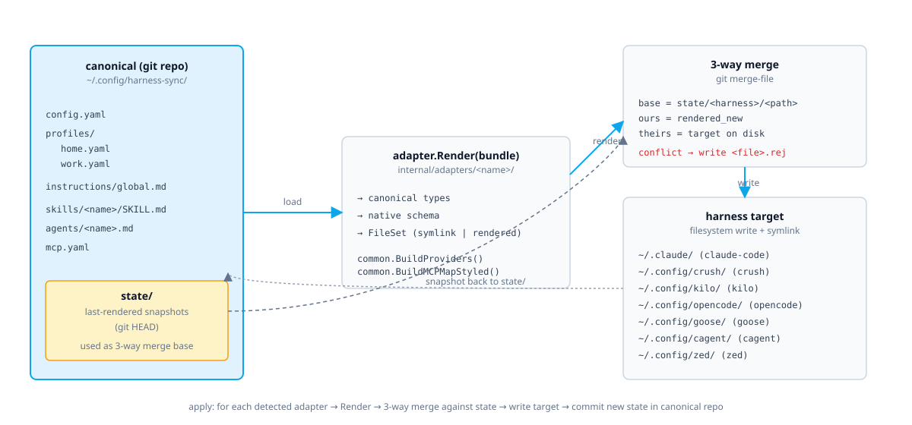

One Config,
Every Harness
One canonical source of truth for skills, agents, MCP servers, LLM endpoints, and global instructions across every LLM harness on your machine.


One canonical source of truth for skills, agents, MCP servers, LLM endpoints, and global instructions across every LLM harness on your machine.
Seven harnesses. Seven copies of the same config. They drift.
mcpServers, mcp, context_servers...)${VAR} env-var substitution, never storedEverything you need to manage LLM harness config at scale
Profiles, skills, agents, MCP servers, and instructions — one git-managed directory
Each harness gets its correct native format — right keys, right types, right paths
Git merge-file semantics — disjoint changes merge cleanly, conflicts produce .rej files
Bundle gateway URL, model allowlist, and upstream keys — switch with one command
Env-var substitution at render time — secrets never stored in canonical tree
Detects which harnesses are installed and only touches what's relevant
See exactly what will change before writing — diff every file without touching disk
Revert the last N applies — full version history preserved in local git
Pulls latest release in place with SHA-256 verification
Only overlays managed keys — your hooks, permissions, and editor settings survive
harness-sync init picks the best source harness and imports everything
Add a harness: drop a Go package under internal/adapters/
Each adapter grounded against real config files and official docs
MCP · Skills · Instructions
Built-in subscription — provider config managed by Anthropic directly.
MCP · Skills · Providers · Models
Full gateway rendering with provider map and default model support.
MCP · Skills · Providers · Models
Kilo CLI with provider map, model, and small model configuration.
MCP · Skills · Providers · Models · Instructions
Full rendering with JSONC config support and instructions merging.
MCP · Skills · Providers · Models
YAML config with extensions map and custom provider JSON files.
MCP · Providers · Models · Instructions
Starter YAML config with per-agent model selection.
MCP · Providers · Models
Context servers and language model configuration in settings.json.
One binary, zero dependencies, every platform
Picks the right artefact for OS/arch, verifies SHA-256, drops binary in ~/.local/bin.
macOS and Linux via Homebrew tap.
Requires Go 1.24+ and git on $PATH.
Three commands to get going
Lists which harnesses are installed on your machine.
Imports config from detected harnesses into the canonical tree.
Renders and writes native config to every detected harness.
$ harness-sync detect # list adapters + detection status $ harness-sync show [harness...] # print files each adapter manages $ harness-sync init # import from detected harnesses --from a,b # pick adapters, skip prompt --no-prompt # take all detected --force # allow re-init $ harness-sync apply [harness...] # render + write --dry-run # show plan, write nothing --force # overwrite without merge --yes # skip confirmation prompt $ harness-sync diff [harness...] # apply --dry-run shorthand $ harness-sync profile list # list canonical profiles $ harness-sync profile use <name> # switch active profile --apply # reapply after switching $ harness-sync rollback [n] # git revert last N applies $ harness-sync update # reinstall latest release
Single Go binary, ~5000 LOC, 18 packages, 93 tests

~/.config/harness-sync/ (git) ├── profiles/<name>.yaml ├── skills/<name>/SKILL.md ├── agents/<name>.md ├── mcp.yaml └── instructions/global.md
base ← state/ (last render) ours ← rendered (what we'd write now) theirs ← on disk (what's actually there) disjoint → clean merge, write overlap → .rej file, exit non-zero